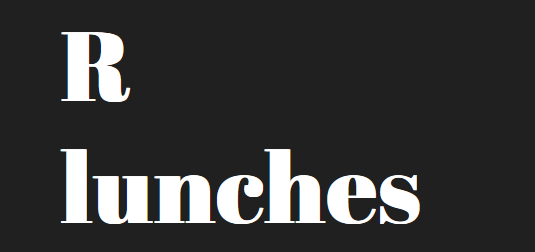

Activities
🥪R-Lunches

WeData has also its own association in the university of Geneva. You can find its page here. This association need 3 students represenative to works (president, secretary and accountant).
Every semester we organize 3 to 5 meetings around R in the University of Geneva. R-Lunches take place every first Tuesday of the month between 12:15 and 13:30. We invite presenters to talk about a topic of their choice. Every semester we have between 3 to 5 sessions and we can afford funds for food and speakers’ travel expense.
If you want to help you can…
- Suggest speakers for the next semester
- Be the speaker for one session
- Communicate the event
See the Contact part.
📽️YouTube
One of the association’s main objectives is educational. Indeed, the aim is to share our passion with interested people. Our main platform is our YouTube channel. We currently publish one video per week on the theme of data sciences and computer science. All our videos are in french (subtitles in french, english, german, italian, spanish, arabic and kinyarwanda), but we’re open to other languages and many topics.
The ultimate goal would be to create online courses on topics that are useful to people interested in tech literacy.
If you want to help you can…
- Suggest future topics
- Help building courses
- Like and share videos to help the channel grow!
📝Blog
Still on the theme of producing educational content, the association has a blog and an exercise platform where it publishes tutorials. Articles are written in English, and the website automatically translate them into French, Italian and Arabic (other languages are possible).
If you want to help you can…
- Review other member blog posts
- Write some blog post yourself
- Share them!
Books
While blog posts are very interesting for sharing free content on a wide range of topics, sometimes it is necessary to create content focused on a specific subject. That is where the power of books (online) comes in. The goal is to create instructional books using quarto. We would like to use the style of bookdowns. We have, at the very least, the objective of creating a book on web scraping in R and Tidier.jl in Julia. But any idea for a book is welcome.
If you want to help you can…
- contribute in specific chapters
- Review the books
- Share the books
Exercises
Beyond blogs and books, there is still one important part that you need to have in your learning process: practice. And that’s what we offer here. We have developed a website that uses webr (and more specifically quarto-live) to create online R exercises without the need for a server. So wether your in class, in the bus or anywhere take advantage of this opportunity to test your knowledge!
If you want to help you can…
- Review the exercices and give feedback
- Create some exercises yourself
🗣️Workshops and Conferences
The association organizes free in-house workshops. No specific requirements apply to the content of these workshops except that it has to be related to the association theme. They can take place face-to-face or remotely via a Zoom link, for example.